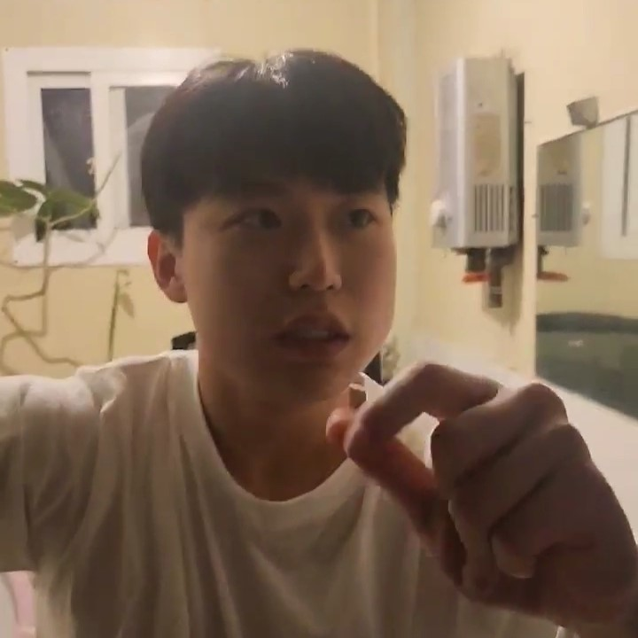
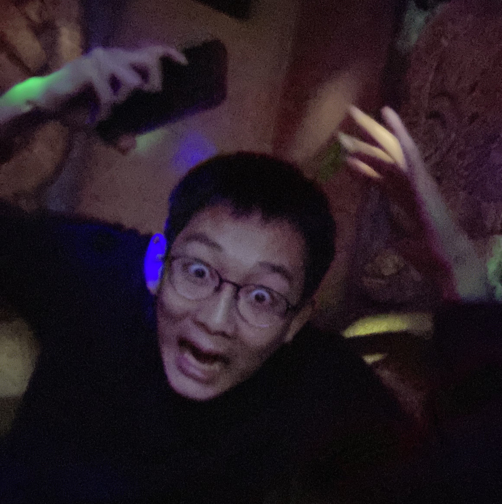

About Us
Director & Developer

Han Jihoen
3대 300.
완전히! 돌@아버린 상남자 한지헌.
곽과의 인연: 2017~ing
‼️ 겁내지 마십쇼 ‼️ 이 사람은 당신을 도와주는 사람입니다‼️
이번 작업의 기획과 개발을 맡은 유능한 총괄 디렉터이며 언제 어디서 다가올지 모르는 곽의 위협에 대비하여 사이트를 기획하였습니다.
지금 개발을 하는 시점에도 곽의 협박을 받아오며 겁탈의 위험성을
피해 끊임없이 곽의 죄와 범죄 행위에 대해 안내하고 있습니다.
곽과의 인연: 2017~ing
‼️ 겁내지 마십쇼 ‼️ 이 사람은 당신을 도와주는 사람입니다‼️
이번 작업의 기획과 개발을 맡은 유능한 총괄 디렉터이며 언제 어디서 다가올지 모르는 곽의 위협에 대비하여 사이트를 기획하였습니다.
지금 개발을 하는 시점에도 곽의 협박을 받아오며 겁탈의 위험성을
피해 끊임없이 곽의 죄와 범죄 행위에 대해 안내하고 있습니다.
Assistant Director

Lee Jeonin
3대 330.
뒤@질라게 이기적인 이기정인.
곽과의 인연: 2009~ing
‼️곽에게 당한 가장 큰 피해자입니다‼️ 더 많은 피해자가 나오는 것을 막기 위해 프로젝트에 참여하였고 곽의 음부에 대한 트라우마가 아직 있지만 범해진 충격을 이겨내고자 운동을 시작한 후 이제는 곽을 역으로 범할 수 있는 몸을 만들었습니다. 현시점 요인암살, 공작, 선동 ,반란 등 곽의 위협에 최전선에서 활약하고 있는 인물입니다.
곽과의 인연: 2009~ing
‼️곽에게 당한 가장 큰 피해자입니다‼️ 더 많은 피해자가 나오는 것을 막기 위해 프로젝트에 참여하였고 곽의 음부에 대한 트라우마가 아직 있지만 범해진 충격을 이겨내고자 운동을 시작한 후 이제는 곽을 역으로 범할 수 있는 몸을 만들었습니다. 현시점 요인암살, 공작, 선동 ,반란 등 곽의 위협에 최전선에서 활약하고 있는 인물입니다.
Director of Photography

Jo Gunhee
3대 250.
죠@끄튼 돌연변이 해@변 조건희.
곽과의 인연: 2018~ing
‼️곽 성병연구소 연구소장입니다‼️ 이 남성은 곽의 스토커이며 현재
곽이 임질, 매독, 사면발이, 에이즈, 클라미디아, 사마귀, 헤르페스2형, 원숭이두창 등의 성병에 감염되었다고 주장하고 있습니다. 그의 최종
목표는 곽의 음경 사진 노모버전을 게이 포르노 사이트에 올려 수익을 창출하는 것이며, 이를 달성하기 위해 불철주야 카메라를 들고 곽을 관찰하고 있습니다.
곽과의 인연: 2018~ing
‼️곽 성병연구소 연구소장입니다‼️ 이 남성은 곽의 스토커이며 현재
곽이 임질, 매독, 사면발이, 에이즈, 클라미디아, 사마귀, 헤르페스2형, 원숭이두창 등의 성병에 감염되었다고 주장하고 있습니다. 그의 최종
목표는 곽의 음경 사진 노모버전을 게이 포르노 사이트에 올려 수익을 창출하는 것이며, 이를 달성하기 위해 불철주야 카메라를 들고 곽을 관찰하고 있습니다.